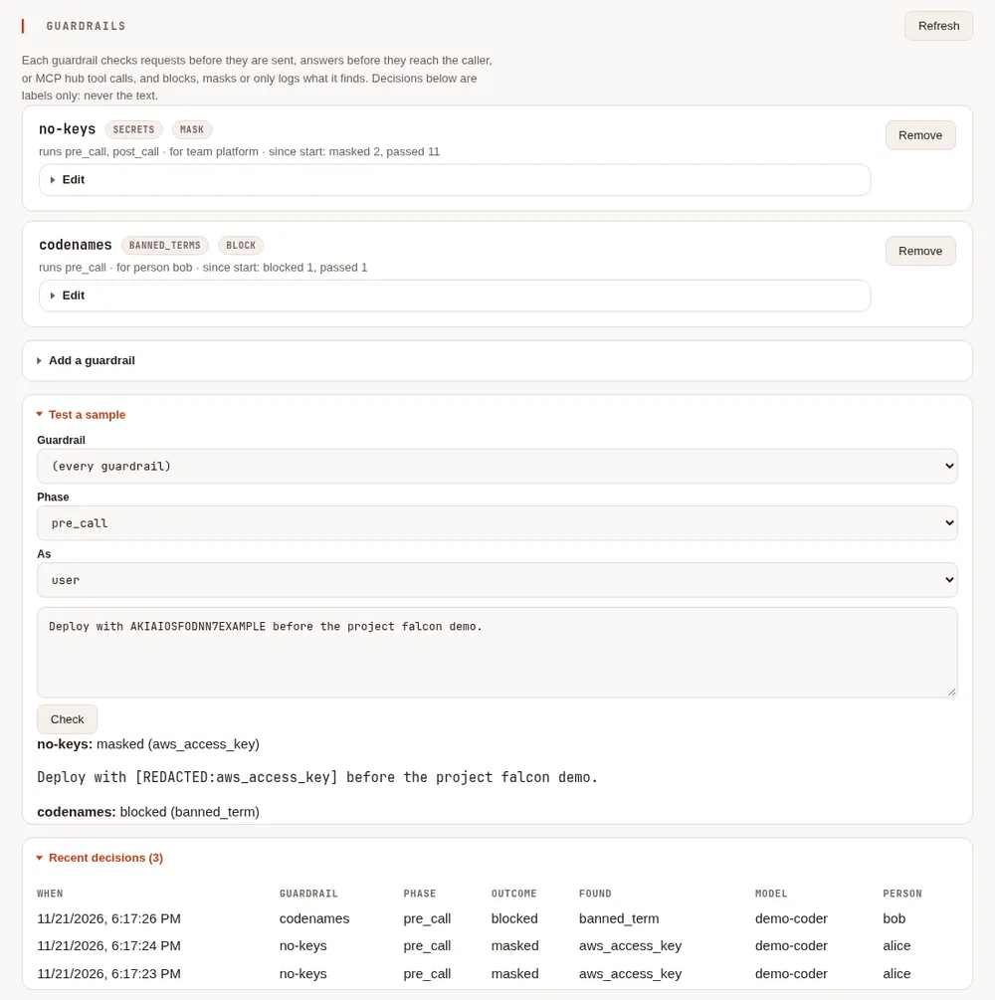
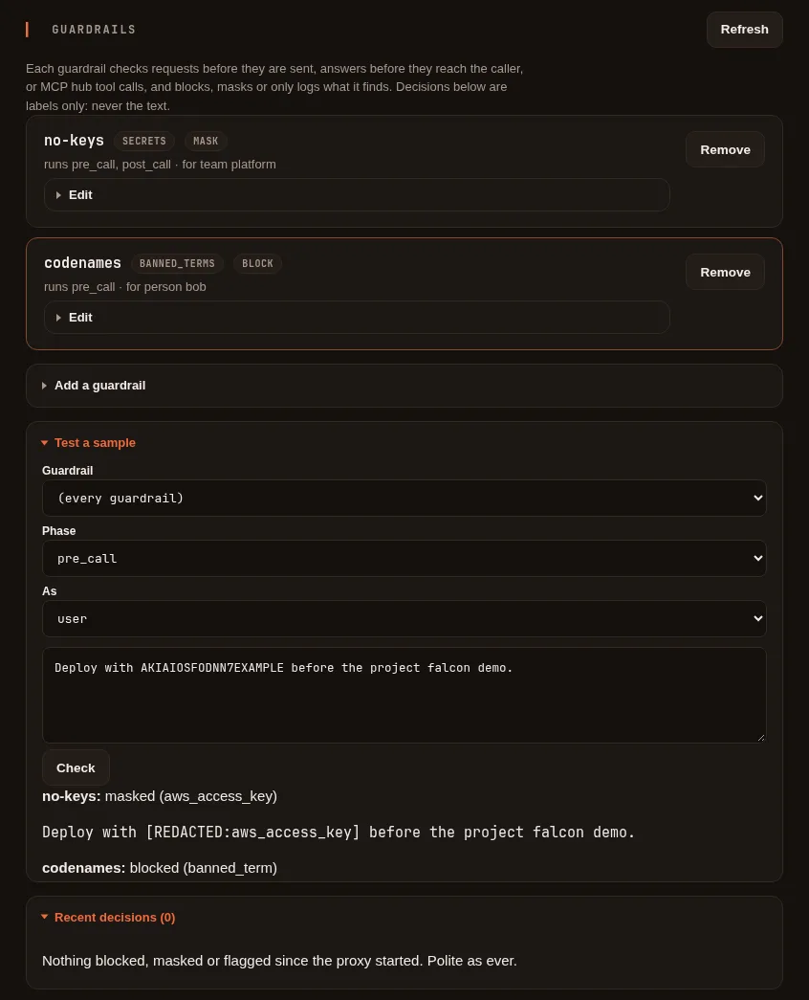

The proxyFeatures11 min read
Guardrails #
On this page
Guardrails check what goes to a model and what comes back, at the proxy. They can stop a request that holds an API key, mask an email address before it leaves your network, refuse banned words, or flag a tool result that tries to give the model new instructions. You choose what each one checks, what it does when it finds something, and who it applies to.
Nothing until you add one
If you configure no guardrail, nothing changes: requests and answers pass exactly as before, and no header or message is added.
In plain words #
A guardrail is a rule the proxy applies to every request it serves (or only to some people, teams, models or tagged requests). It looks at the text, and when it finds what it is looking for it does one of three things:
- block: the request is refused with a clear message, and never reaches the model. For an answer, the caller gets the refusal instead of the answer.
- mask: what it found is replaced (for example
[REDACTED:email]) and the request goes on. The same text is masked the same way every time, so a conversation stays consistent from turn to turn. - log_only: nothing changes; the decision is recorded so you can see how often it would have acted.
Some guardrails are built in and need nothing else: nothing leaves the proxy. Others call a service you choose: your own guardrail service, or a cloud provider's.
To add one:
- Open the setup page, Guards & limits, and find the Guardrails card (or press Add a guardrail in the page's header).
- Open Add a guardrail, give it a name, choose its type and what it does, and press Add.
- Use Test a sample to see what it decides about some text, without sending anything to a model.
- Under each guardrail, choose who it runs for, and whether it runs on every request or only when a request asks for it by name.
Recent decisions on the same card lists what was blocked, masked or flagged since the proxy started: the
guardrail, when, the model and person, and what kind of thing was found (email, aws_access_key). Never the text
itself.


What each type checks #
| Type | Checks | Can mask |
|---|---|---|
secrets | API keys and credentials in known shapes: AWS access keys, GitHub, Anthropic, OpenAI, Slack, Google and Stripe keys, private keys, JSON Web Tokens, and Maple's own access tokens | yes |
pii | Personal data: email addresses, phone numbers, payment card numbers and IBANs (only numbers whose check digits are right), US Social Security numbers, Canadian Social Insurance Numbers, UK National Insurance numbers, and IPv4 addresses when you ask for them | yes |
banned_terms | Words or phrases you list, whole words only, ignoring case | yes |
regex | Regular expressions you write, each with a name that is shown when it matches | yes |
size | How long a request is in all, how long one message is, and how many messages it holds | no |
prompt_injection | Instructions hidden in what a tool returned: "ignore the previous instructions", fake system tags, chat-template markers, text hidden from people with invisible characters. Only tool results and MCP results are checked, never what a person typed | yes (the marker is removed) |
webhook | Your own service, called with the text (see Your own guardrail service) | when the service returns changed text |
openai_moderation | OpenAI's moderation endpoint | no |
azure_content_safety | Azure AI Content Safety: harm categories at or above a severity, and your blocklists | no |
azure_prompt_shield | Azure Prompt Shields: attacks in a person's prompt or in tool results | no |
bedrock | An Amazon Bedrock guardrail, through one of your Bedrock providers' region and AWS credentials | when the guardrail anonymises |
google_model_armor | A Google Model Armor template | no |
moderation | The proxy's own /v1/moderations: the built-in model, one of your local classifiers, or a moderation model one of your providers serves (see Moderation on your machine) | no |
A service sees the text
The webhook and provider types send the checked text to that service. Choose services you trust with what your
requests hold. The built-in types (secrets, pii, banned_terms, regex, size, prompt_injection, and
moderation with model: builtin) check on this machine.
A moderation guardrail with model: builtin (the default) checks on this machine. With a classifier or a
provider's moderation model, the text goes to that server, asked for the request's own caller: their model list must
allow that model, the call counts against their budgets (not their rate limits: the request it checks already holds
its place), and it is a line of its own in the usage log (surface moderations). Like a service, it checks the latest messages by default, and timeout_ms and on_error apply.
When guardrails run #
| Phase | What is checked |
|---|---|
pre_call | The request, before it is sent: its system prompt, messages, tool results and the tool calls in its history |
post_call | The answer, before the caller gets it: its text and the arguments of the tools it calls |
mcp_call | A tool call made through the MCP hub: its arguments, before the tool's server gets them |
mcp_result | What a hub tool returned, before it goes back: to the client, or to the model when the proxy runs the tool itself in a tool loop (whose model calls also pass pre_call and post_call, each on its own) |
Each type has its own default: secrets and pii check requests and answers, prompt_injection checks requests (their
tool results) and MCP results, every other type checks requests. Set phases to change it.
Streamed answers #
A streamed answer is checked one of two ways (stream):
buffered, the default: the proxy reads the whole answer, checks it, then sends it (masked where a mask applies). Block and mask both work, and a blocked answer is an ordinary error the client understands. The client sees nothing until the answer is complete.chunked: the answer is sent as it arrives and checked as it grows. If a guardrail blocks, the answer stops there with a short note, and what was already sent stays sent. Masking is not possible this way.
Which one to pick
buffered when what must never reach a person is in the answer (a key the model repeats back). chunked when
people watch long answers arrive and a late stop is acceptable.
Who a guardrail runs for #
By default a guardrail runs on every request. applies_to narrows it:
peopleandteams: the request's person is one ofpeople, or their team one ofteams(see People and teams).models: the model name the request asks for matches one of these names or patterns (gpt-*,copilot/*). It is the name as the caller sent it: an alias, anautoname or a model group is matched by its own name, not by the model it is served by.tags: the request carries one of these tags (X-Maple-Tags).
Every part you set must match. A guardrail limited to models or tags does not run on MCP hub tool calls, which have neither.
With default_on: false, a guardrail runs only on a request that names it in the X-Maple-Guardrails header
(comma-separated). A request can turn a guardrail on this way, never turn one off.
What a client sees #
- A blocked request or answer is refused with HTTP 400. On the OpenAI-compatible address the error's type is
guardrail_blocked; on the Anthropic-compatible address it is aninvalid_request_error. The message names the guardrail and what kind of thing it found, and, for a service that says why, its reason. Clients do not retry it. - A guardrail service that cannot be reached, with
on_error: closed(the default), refuses the request with HTTP 503 (guardrail_unavailable). Withon_error: openthe request goes on and the decision says the check failed. - The
X-Maple-Guardrailsresponse header lists what each guardrail that ran decided, for examplepii=masked, keys=passed, keys@post_call=passed(the phase follows an@when it is notpre_call). On a streamed answer checked in chunks, only the request's decisions can be in it. - A chained proxy below treats a block like a provider refusing a request on its content rules: it does not retry it elsewhere, except through its own content policy fallbacks.
Your own guardrail service #
The webhook type calls an address you give with the request's or answer's text, in the shape LiteLLM's generic
guardrail API uses, so a service written for LiteLLM (for example one in front of Presidio or Lakera) answers Maple as
it is.
The proxy sends a JSON POST:
{
"texts": ["the first text", "the second"],
"input_type": "request",
"litellm_call_id": "maple-…",
"request_data": {"model": "gpt-5", "user_api_key_user_id": "ann", "user_api_key_team_id": "red"},
"additional_provider_specific_params": {"your": "params"}
}input_type is request for what goes to a model and response for what a model wrote. The person and team are
there only when people are configured. The service answers:
{"action": "NONE"}
{"action": "BLOCKED", "blocked_reason": "contains a secret"}
{"action": "GUARDRAIL_INTERVENED", "texts": ["the f***t text", "the second"]}GUARDRAIL_INTERVENED with one text for each text sent replaces them (when the guardrail masks). The connection follows
the same rules as an alert webhook: https, or plain
http to this machine only with allow_http_loopback; this machine and private networks only with allow_private;
link-local and cloud metadata addresses never; no redirects followed; a timeout on every call.
The settings #
Guardrails live under guardrails: in config.yaml. The setup page's card writes the same entries.
guardrails:
- name: keys
type: secrets # block is the default action
- name: pii
type: pii
action: mask
applies_to:
teams: [support]
- name: no-codenames
type: banned_terms
terms: ["project falcon"]
action: log_only
- name: tools-injection
type: prompt_injection
- name: in-house
type: webhook
url: https://guard.example.com/beta/litellm_basic_guardrail_api
api_key: ${secret:guardrails/in-house/api_key}
timeout_ms: 3000
on_error: open
- name: bedrock-pii
type: bedrock
provider: aws-east # a type: bedrock provider
guardrail_id: abc123def456
guardrail_version: "3"
action: mask| Key | Default | What it does |
|---|---|---|
name | required | How requests, the header and the card name it: letters, digits and . _ - |
type | required | One of the types above |
action | block | block, mask or log_only. mask only for the types that can mask |
phases | the type's own | Any of pre_call, post_call, mcp_call, mcp_result |
default_on | true | false: only for requests that name it in X-Maple-Guardrails |
applies_, applies_, applies_, applies_ | everyone | Who and what it runs for (see above) |
stream | buffered | buffered or chunked, for answers that are streamed |
messages | all for built-ins, latest for services | Which messages of a request are checked: all, or latest (those after the last answer, the new turn), so a service is not sent the whole conversation each turn |
detectors | all (pii: all but ipv4) | For secrets and pii: only these. secrets: aws_access_key, github_token, anthropic_key, openai_key, slack_token, google_api_key, stripe_key, private_key, jwt, maple_token. pii: email, phone, credit_card, iban, us_ssn, ca_sin, uk_nino, ipv4 |
terms | none | For banned_terms: the words and phrases |
patterns[], patterns[] | none | For regex, and extra detectors for secrets, pii and prompt_injection |
max_chars, max_, max_messages | none | For size: the limits, in characters and messages |
url | the service's own | The webhook's address, or a provider's own endpoint (Azure: https://<resource>.cognitiveservices.azure.com): ${secret:guardrails/<name>/url} (the setup page stores it there) or ${env:MAPLE_GUARDRAIL_...}. A literal address is accepted only for a guardrail without a key, so a key is never sent somewhere a file edit alone pointed it |
api_key | none | The service's key: only ${secret:guardrails/<name>/api_key} (the setup page stores it there) or ${env:MAPLE_GUARDRAIL_...}, never the key itself. For google_model_armor, an access token |
api_key_header | Authorization (as a bearer token) | For webhook: another header to send the key in, such as x-api-key |
timeout_ms | 5000 | The longest one call to the service may take, at most 60000 |
on_error | closed | closed refuses a request the service could not check; open lets it through |
allow_private, allow_ | off | Let the service be on this machine or a private network; plain http to this machine only |
params | none | For webhook: sent as additional_provider_specific_params |
model | omni-moderation-latest; builtin | For openai_moderation: the OpenAI model. For moderation: the /v1/moderations model asked (builtin, a classifier's name, or a model a provider serves) |
severity | 4 | For azure_content_safety: the severity (0 to 7) from which a category counts |
blocklists | none | For azure_content_safety: your Azure blocklist names |
provider, guardrail_id, guardrail_ | version DRAFT | For bedrock: the Bedrock provider whose region and credentials are used, and the guardrail |
project, location, template | none | For google_model_armor: the template |
A guardrail's key is kept for that guardrail only: a provider's api_key cannot name it, and a guardrail cannot name a
provider's key.
Privacy #
- Decisions hold labels only: the guardrail, the phase, the outcome, what kind of thing was found, the model and the person. Never the text, what matched, or a service's explanation.
- Blocks and masks are written to the proxy's audit log the same way, at most one line a minute for each guardrail, outcome and person, with a count of the rest.
- A sample checked on the card is not recorded. A webhook or provider guardrail sends it to its service, as it would a request.
- The usage log is not changed by guardrails.
- When the content export is on with its masking, the built-in guardrails that mask are applied to what it exports too, after its own masking of credentials. A guardrail that calls a service is never sent exported content.
What guardrails cover #
What is checked in a request: its text, its tool results, and the arguments of the tool calls in its history. Not
checked: images, files and other parts that are not text, and tool definitions. With messages: latest, only the
turn after the last answer is checked; a caller can write earlier turns itself, so use all when what matters is
everything a request holds. In a streamed answer checked in chunks, a tool call's arguments are checked when the
answer ends. Request checks run before the proxy's own access and budget checks, so a service guardrail may be asked
about a request the proxy then refuses.
The content export takes a copy of each answer before the answer's guardrails run: with both on, an answer a guardrail
blocked can still be exported (masked by the built-in guardrails that mask). With action: mask, a Bedrock guardrail
whose policy blocks replaces the text with its own blocked message.
Chat requests on both addresses (chat completions, the Responses API and the Anthropic messages API), the setup page's playground, and tool calls through the MCP hub (its MCP address and its REST route).
Chat and tools only
The other routes that pass a request to a provider as it is (embeddings, rerank, moderations, images, audio, files, batches and pass-through routes) are not checked by guardrails. Limit who may use those routes with access control instead.
Not yet verified #
The provider guardrails (OpenAI moderation, Azure Content Safety and Prompt Shields, Amazon Bedrock Guardrails, Google Model Armor) and the webhook's compatibility with LiteLLM-shaped services were tested against stand-ins that answer in each service's documented shape, not against the real services. A Google Model Armor access token is taken as given and not renewed by the proxy.
See also #
- Access control Who may use which models and routes, from where, and when.
- Content export and callbacks Send prompts and answers to your tools, masked first.
- MCP hub Tool calls that guardrails check on the way in and on the way out.
- Your usage data The usage log, which guardrails never change.